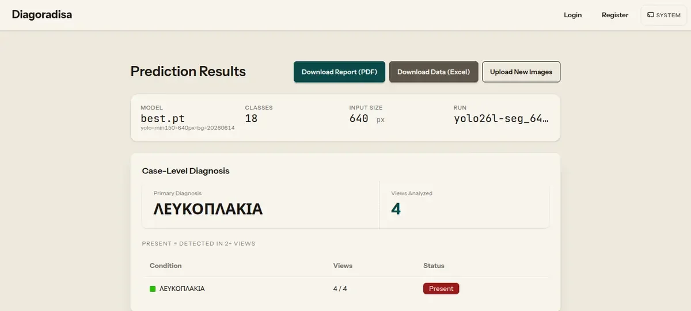
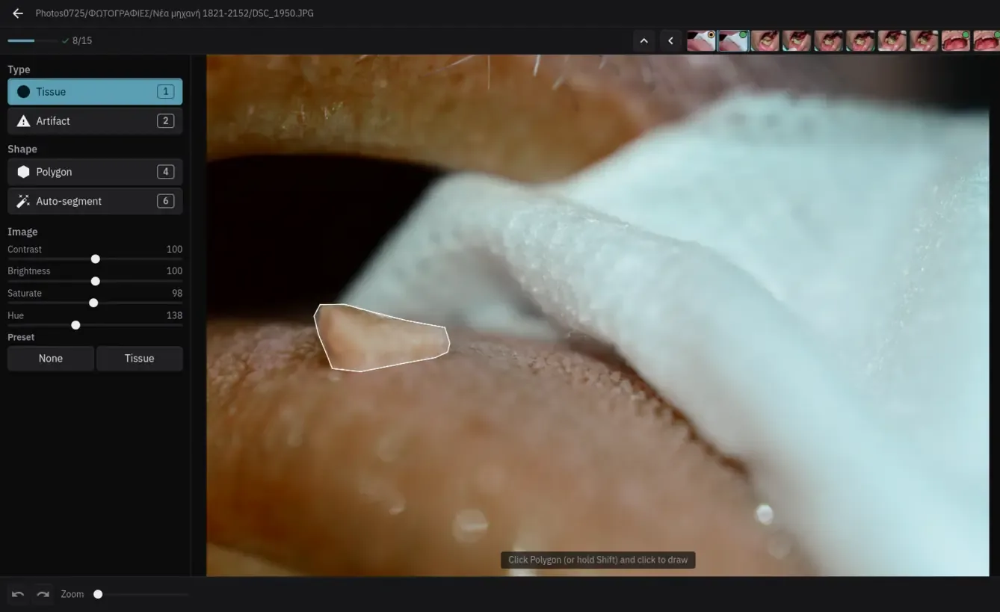

01
Measure before you claim.
Every number here comes from a run, a test, or a dated report. When a result was bad, I kept the number.
+0.048 box mAP@50after normalising 754 mislabelled images
Fullstack engineer · Athens, Greece
From July 2025 to October 2026 I was the sole developer of Diagoradisa: an annotation tool, a dataset pipeline, a model server, and a clinician app, built as one system.
Currently Building Waypoint
Learning TypeScript and React

4 / 4 views agree 18 classes · 640 px01 / Selected work
Diagoradisa is the deep case study. The earlier work is here as text, with no invented screenshots.
Clinical AI platform
Jul 2025 — Oct 2026
An annotation tool, a dataset pipeline, a model server, and a clinician app — built as one system for oral pathology.

02 / Method
Three habits, each with a receipt.
01
Every number here comes from a run, a test, or a dated report. When a result was bad, I kept the number.
+0.048 box mAP@50after normalising 754 mislabelled images
02
Four services only work if the contracts between them do. I built both sides, so I fixed the seams instead of filing them.
4 services · 1 developerin production since August 2025
03
I shipped a clinical gate engine, A/B tested it, found no net benefit, and removed it — code, flag, API fields, and all.
210 cases · ~0.6% touchedremoved 16 June 2026
03 / Evidence
The model is useful. It is not a diagnosis. The numbers say both. Ten cases is a product test, not a validation study.
4
Correct
3
Wrong
3
No diagnosis
The model is bimodal: it fires above 85% or not at all. Read the ten cases →